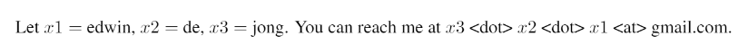

Twitter: @EdwinDdeJong
Github: edwin-de-jong
Email: 
Interests: Building new machine learning technology | Deep Learning | Representation Learning | Coevolution
Publications: on Google Scholar page
Video showing what a generative recurrent neural network learns over the course of training.
See: Incremental Sequence Learning (blog post), or the article: https://arxiv.org/abs/1611.03068
The MNIST stroke data sequence learning data set: all 70000 MNIST handwritten digit images transformed to stroke sequences.
Brief blog post on coevolution and its relevance to current machine learning, touching on accurate evaluation, ideal evaluation, extracting the underlying objectives of a problem, representation learning, and GANs.